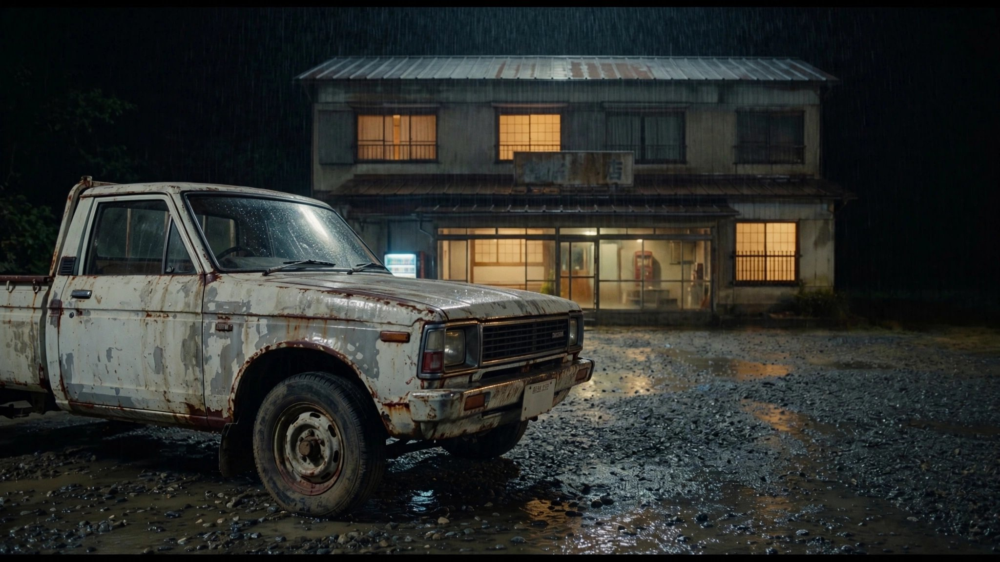
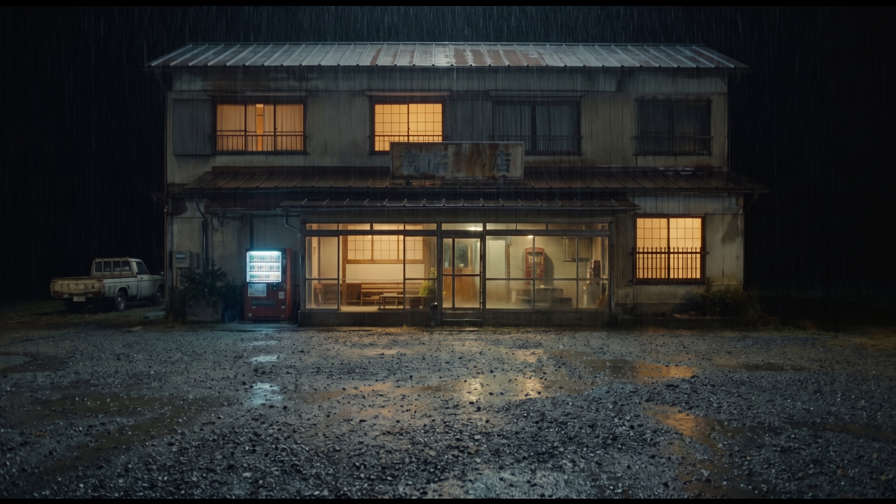
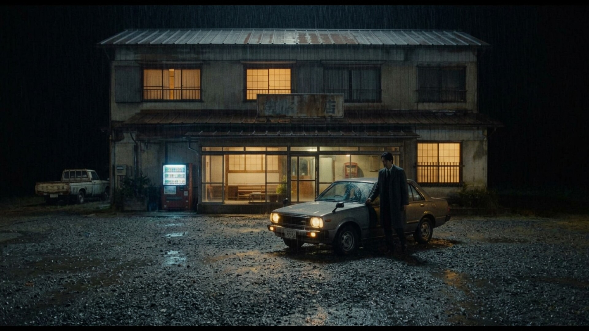

SHOT 01 · nw_s31 · nw_b741 (16.46s -> 12.29s + 4.17s)
The crooked pickup
“A pickup truck, older than the building's paint, is parked crooked behind it.”

option 2 of 2 selected (2048×1152) · Directory only · Open full-size image ↗
Surrounding frames


Prompt & references
Create ONE horizontal widescreen 16:9 photorealistic cinematic film still for the Tokyo noir drama Nobody's Witness at beat nw_b741, bridging the two supplied rainy highway-inn night references. Compose a distinct closer low three-quarter view from the wet gravel of the old white pickup truck - plainly older than the building's paint - parked crooked at the far left edge of the lot against the inn: nose angled out, sagging suspension, faded primer patches, rust along the wheel arches. Keep the same two-storey weathered inn, rusted tin roof, warm glowing windows, red vending machine and cold night rain of the references. No people and no other cars in frame. Match the inn's wood, the gravel lot, wet reflections and subdued night lighting exactly. Grounded 35mm film photography, Tokyo-noir palette, true 16:9 landscape framing. No captions, subtitles, added readable text or watermark.
- Preceding shared still:
/film/img/s31/31-00-the-inn-before-he-arrives.jpg - Following still:
/film/img/s31/169-the-only-car.jpg